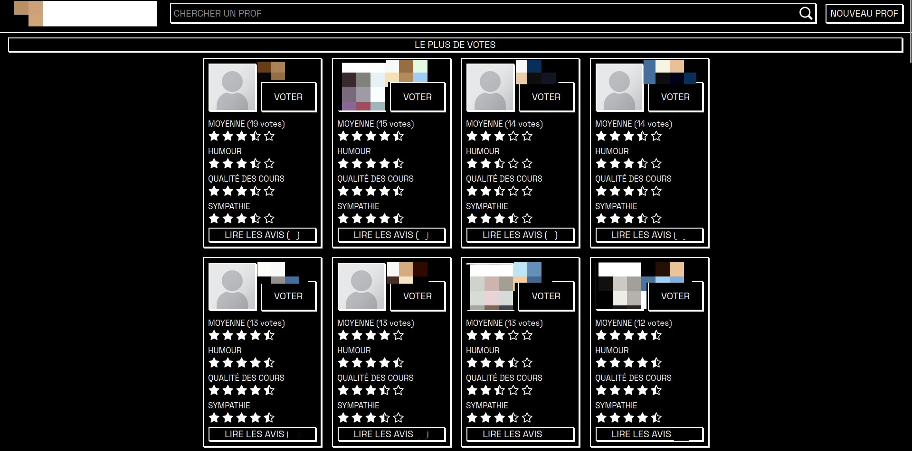
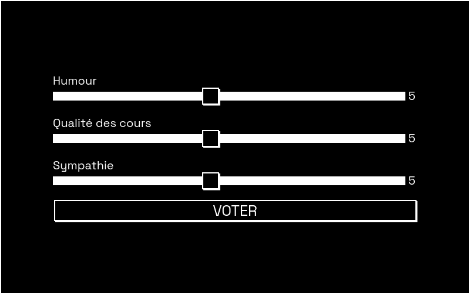
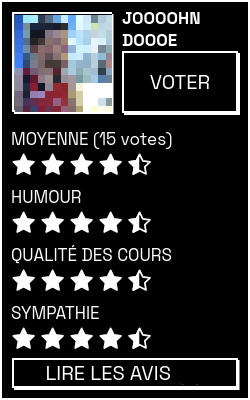
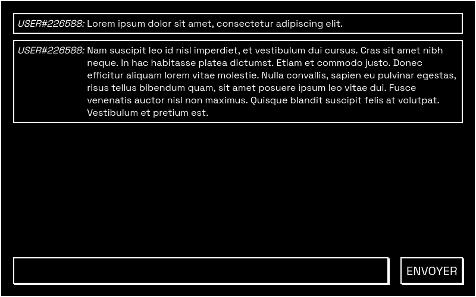
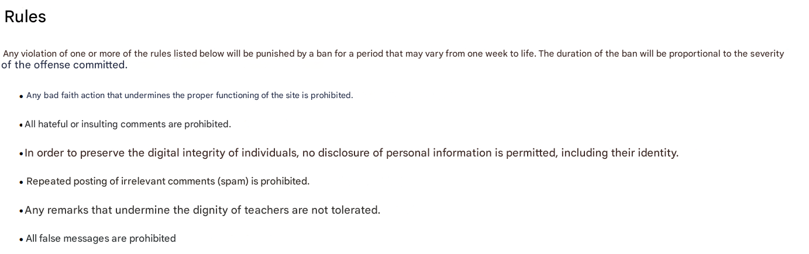
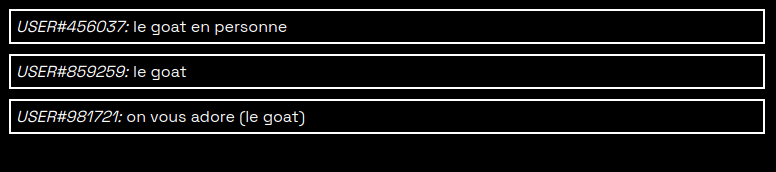
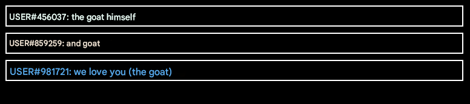

The website we created to give a voice to the students at my school
This article primarily presents factual and indisputable information, with only a few sections offering my personal perspective, which will be clearly marked.
Introduction
This article tells the story of a group of students who, a few years ago, launched a website that turned my school upside down in just a few days. It’s the story of how my friends and I used our coding skills to make our vision a reality — how the entire school caught wind of it, and how the education authority responded. It's a story of surprises, mistakes, pressure and lies, but above all it's the initiative of a student who hadn't planned any of it.
How did it all begin ?
All this begun a few years ago when I was 15. I was already working on web development projects with friends from time to time, just to pass the time and because it was fun. One day we had an idea for an ambitious and exciting project without having any idea of how far it was going to go.
What was the problem ?
This section differs from the rest of the article, as it includes not only factual information but also my personal vision and interpretation of the situation. Naturally, my opinion is solely my own.
To create this site, we started from a simple observation: some teachers are sometimes totally or partially incompetent in their work and very few measures are taken. The real problem is that teachers are poorly supervised, and students are practically powerless to do anything about it.
Unlike most services, teaching isn’t directly controlled or chosen by the customer — and that’s a major problem.
Imagine two people each opening a bakery in a village. One of them is passionate about her work and puts a lot of time into making great bread. The other lacks motivation and, unfortunately, the skills to make good bread.
Thankfully, both bakers won’t meet the same success because customers can choose which bakery to go to. Services like Google Maps make that decision even easier by offering ratings and reviews.
On the other hand, teaching works very differently. Some teachers are very unskilled and sometimes behave very inappropriately. Others are much more competent and pleasant for the students. But both will continue to teach, while sometimes degrading the quality of teaching and the well-being of the students.
The problem is that students don't have the opportunity to speak out and denounce inappropriate attitudes.
So we built what is essentially Google Maps for teachers — a place where students could rate and comment teachers, just like with businesses.
Our solution: a website where students can rate and review their teachers
Our project was ambitious, risky and motivating. We wanted to create a web platform where all the students in my school could share their opinions about their teachers. We spent about a month actively developing this platform. It wasn't easy, but it was an interesting project in which we learned a lot.

Home page overview (it's in french)
Some teachers are represented by an image, which we have retrieved from public sources on the Internet.
We chose three rating criteria that we believe are important :
- humor
- teaching quality
- kindness

Students can rate their teachers on each of these criteria using a scale from 1 to 10. The number of stars is then calculated based on the average score for each criterion.

It is also possible to send comments anonymously.

Our aim was to improve the quality of education by giving students a platform to share their opinions about teachers and report issues, helping encourage teachers to improve.
We wanted to give students the voice they deserved and desperately needed.
Of course, we knew there could be abuse, and we wanted to avoid it at all costs. That's why we started by writing very clear rules :
 The rules page (translated from french with google translate)
Not only have we written the rules, we've also set up an effective moderation system to enforce them. This moderation system allows us to block certain IP addresses for a certain period of time.
Day 1
The site was ready. Now, we just had to let people know about it. To do this, we sent an automatic e-mail to a large proportion of the students at our school.
It was a Wednesday like many others, but not for me. That was the day the world would discover our project. We didn't know what to expect, but I could never have imagined what would happen next. It's the kind of day I'll remember for a very long time.
~ 8 a.m. :
Nothing special is happening, but I’m really excited by the idea that people might be discovering our creation.
~ 9h30 a.m. :
I'm in French class when my phone vibrates. I look at it discreetly under the table and notice that one of my friends has sent me a message. He tells me he’s heard about a site for rating teachers and asks if I’m the one who made it.
At that moment, I was both excited and surprised. Excited because it was one of the first times one of my projects had actually made a noise, and it was like a dream for me. But also surprised that he could guess that I was one of the people behind this site. I didn't reply because I didn't know what to say, but I couldn't forget.
~ 10h a.m. :
It's break time. I pull out my phone and go straight to the site to check if there is any activity. There was activity. A lot of it. Even more than we could have imagined. Some had heard about our site through our email, and many had shared it again and again. There were lots of votes, lots of comments.
It was amazing to read the comments in live. It was really exciting. My first satisfaction was that the majority of comments were positive, and none were insulting or unkind.
~ 11h a.m.
At this hour, I was in an art class. It's a class where a lot of people are on their phones. Listening to the people around me, I've heard several people talking about our site. It was really disturbing and stressful because some people asked me if I was the one behind it. I never imagined it would spread so far.
I keep watching the evolution of comments and ratings. All comments are always kind.
~ 1h p.m.
I've already finished school for the day. Like every day, I head to the station to catch the train, my mind going over everything again.
I see one of my friends, and I go up to him to tell him everything that has just happened. I don’t have time to tell him about the situation, he cuts me off to talk about something serious. He explains how the school director came to find him in his classroom.
This friend had not been involved in the development of the site. Still, the school director was convinced he was behind the site, just because he had some tech skills and a site in the same domain. My friend explained several times that it wasn't him, but he didn't believe it.
The director insisted that he send him excerpts from our Signal discussion. Which I think is illegal, since I didn't agree to this sharing of our private discussions. The problem was that we'd been unmasked: the director now knew we were behind the site.
The end
Recent events have brought me a mix of excitement and stress. I find it very hard to think about anything else. We were in no way prepared for this. We made the difficult decision to take the site down. Because of the pressure, because of the stress and because we never wished for any trouble. We had created the site to improve the situation based on our vision, but we took it down because it had become too much responsibility.
The site will never come back online.
My most talked-about project was only online for a day. In one day 52 students voted more than 300 times, and sent more than 30 comments. No one knows how far it could have gone if it had stayed online.
We mistakenly thought that shutting down the site would prevent reprisals from the school authorities. We were completely unprepared for what happened next...
There was no hate
There’s one more point I’d like to emphasize, because it’s a very important one. Even with total anonymity, not a single one of the numerous comments about the teachers was hateful or insulting. The moderation system hasn't even been used. Most of the comments were constructive, or even friendly.
This project shows that giving students an anonymous voice doesn’t lead to hate, it leads to honesty. This honesty is the key to a better school system.
Example of authentic comments :

For your information: GOAT means “Greatest Of All Time”.
English translation (google translate)

Teachers' opinions
What was most interesting was to hear my teachers' opinions on the project. There were more or less two categories of teachers.
Favorable to the idea
It may seem surprising, but many teachers liked the idea. Many of my teachers explained to me that they found the idea really interesting and disagreed with the school management. These teachers were our greatest support.
One of my teachers even confessed to having written a positive comment about a colleague.
Very angry
Another group of teachers didn't appreciate the initiative at all. It appears that some were even inclined to pursue personal legal action against us. The problem was that some of them hadn't even had time to see the site for themselves, and a lot of false information was circulating.
News article full of misinformation
This was just a few days after the site’s launch. Someone sent me a link to an article in the regional newspaper. I was totally unprepared for what I was about to read.
I quickly realized it was an article about our teacher rating site. A lot of things came to mind when I realized this. Already, what the fuck?? How is it possible to have an article on our site? How did the information spread so far?
I'd always really hoped that one day one of my projects would be the subject of an article in the newspaper, but it really wasn't the way I'd imagined it.
I was very surprised, but as I read the article, I felt not just surprise, but also indignation. I had many reasons to feel indignant, and I’ll list some of them here :
Here's the title of the article (translated from French with Deepl) :
Insults on the Internet also have consequences
Insults ? What insult ? As I explained earlier, the site has never contained ANY insults of any kind.
Here's the subtitle of the article (translated from French with Deepl) :
A website is causing trouble at ****. Students have insulted their teachers online. An act that is not without consequences. The school management and the Department of Compulsory Education want to send out a message of responsibility.
This statement is simply untrue, no teacher was ever insulted. It is also mentioned that the school management want to send out a message of responsibility, but we didn't even get a chance to explain ourselves to them.
Here are a few quotes (translated from French with Deepl):
Insulting messages were quickly posted and the teachers, then the management, were informed.
No insulting messages were posted...
The site has since been closed by the host, at the request of management. The three young people have written an apology and will be heard once again by the ****** management, who do not wish to take sanctions immediately. but rather to learn from the experience.
There is a lot to say.
- The site was not closed by the host but by us.
- There weren't three of us, but two. The third person was falsely accused.
- We have never been heard by the school management at this time.
- It says that the management didn’t want to take immediate action, yet they still shared false information with the press.
The three young people who created this website are exposed to sanctions. Firstly, at administrative and school level. But for the moment, the director of **** ***** ****** has told us that it is still too early to discuss this. Secondly, potential legal sanctions could be applied, since this complaint is currently directed against the website and its authors, and concerns a potential violation of personality.
So it's too early for sanctions, but not too early for legal action and leaking false information to the press ?
After discovering the article, we sent several emails to the newspaper, which replied, briefly, that the article was mainly for educational purposes and that it did not reveal our identities.
Does an educational purpose justify sharing false information ?
Meeting with the school management
After a lot of pressure, threats of legal action, and a misleading news article, we were finally summoned to the principal's office. We were told the meeting would last half an hour, but it ended up lasting over two hours.
To begin with, we were asked if the police had already contacted us. And this wasn't the case. So it looks more like an attempt at intimidation than a real question, since we still haven't been contacted. Even today, we have no proof that a real legal complaint was ever filed.
During those two hours, we had a hard time expressing ourselves, as we were constantly interrupted and put under pressure.
The school management used screenshots of our Signal group as an argument, which posed two problems.
- I never gave my consent for him to read our messages. So I think it's illegal.
- Many of the messages were meant to be humorous, and they don't mean a thing without the necessary context.
We told the principal that using our messages was a violation of our privacy.
They replied, and I quote (literal translation of my memories).
Until now we have been nice, but if you want to play mean, then we can show our fangs.
In my opinion, this sounds like a threat.
Sanctions :
Here are the sanctions that have been chosen for us :
- Three free days of work for the school during the vacations.
- Ban from attending the end-of-year prom.
These sanctions are not based on any article of the school rules.
The reason given for banning us from the end-of-year prom was that some teachers might try to confront us. Which makes no sense, since many teachers actually supported the site — and in any case, it’s their responsibility to control themselves, not ours to avoid them. But anyway I don't care since the prom looked really boring.
Conclusion
The experience of creating and launching the website to rate and review teachers was a rollercoaster of emotions and lessons. What started as a fun and ambitious project quickly turned into a whirlwind of excitement, stress, and unexpected consequences.
This article primarily presents the factual sequence of events, but it is true that we also made mistakes. If we were to do it again, we would likely do things differently.
This project was, above all, an instructive experience from which we draw lessons and learning. We learned how to create a dynamic website and a database, but also that a project can easily spiral out of control, that news articles sometimes present highly exaggerated or false information, and that ethics and responsibility should always guide our actions.